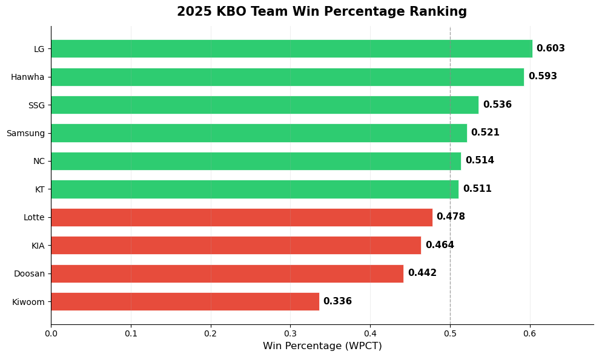
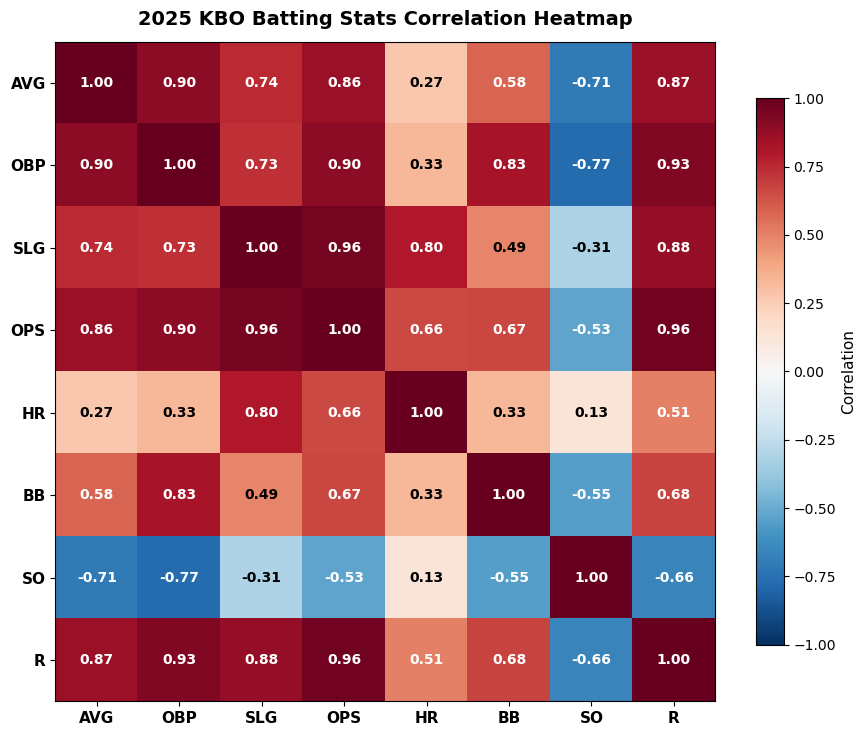
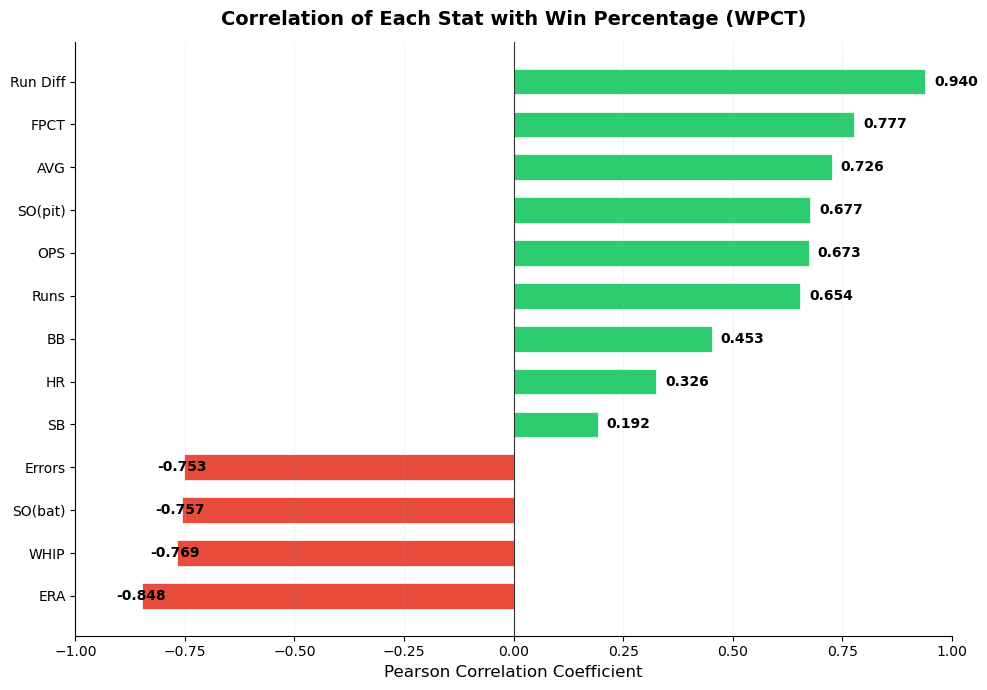
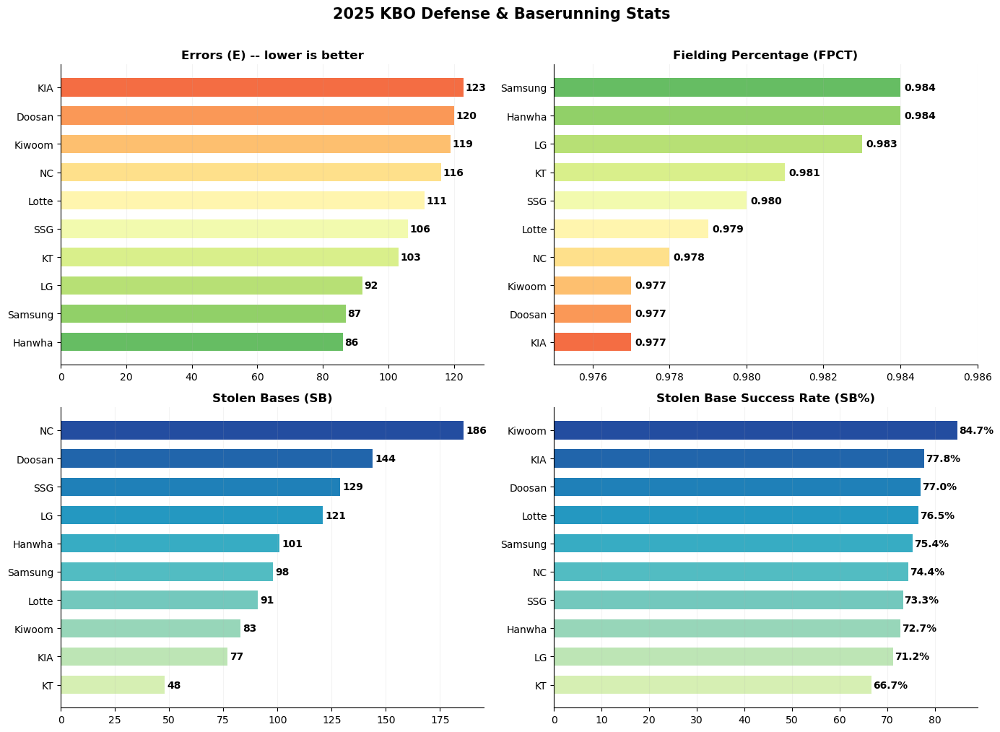
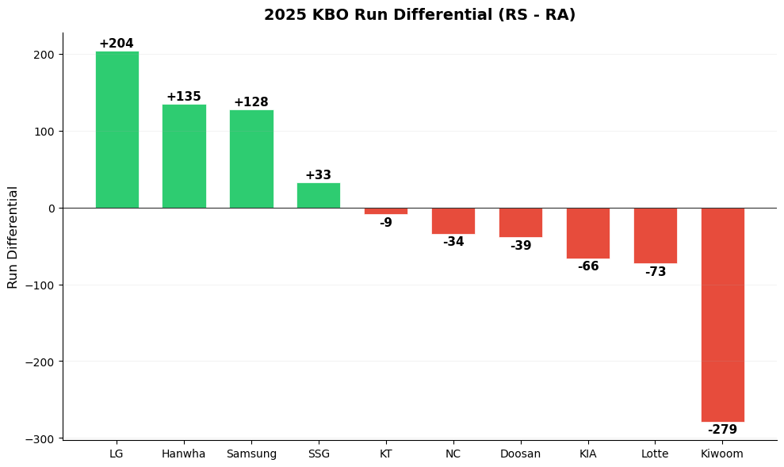

Ch 3. KBO Regular Season Team Performance Analysis#
1. Input 2025 KBO Regular Season Team Records#

Source: KBO Records (6 screenshot image files uploaded)
Claude: Dataset Construction#
The 2025 KBO regular season team records dataset has been organized into 6 sheets.
Batting(1): AVG, G, PA, AB, R, H, 2B, 3B, HR, TB, RBI, SAC, SF
Batting(2): BB, IBB, HBP, SO, GDP, SLG, OBP, OPS, MH, RISP, PH-BA
Pitching(1): ERA, W, L, SV, HLD, WPCT, IP, H, HR, BB, HBP, SO, R, ER, WHIP
Pitching(2): CG, SHO, QS, BSV, TBF, NP, AVG, 2B, 3B, SAC, SF, IBB, WP, BK
Fielding: E, PKO, PO, A, DP, FPCT, PB, SB, CS, CS%
Baserunning: SBA, SB, CS, SB%, OOB, PKO
Each sheet contains data for 10 teams plus totals.
2. Exploratory Data Analysis#
Claude: Dashboard#
🔗 KBO Regular Season Team Performance Dashboard (https://claude.ai/public/artifacts/e413b6d6-4472-489d-af2e-e848e0a1791b)

3. Exploratory Data Analysis: Python Analysis#
Claude: Analysis#
10 clubs · 144 games · Comprehensive batting / pitching / fielding / baserunning analysis
1. Data Loading#
2. Descriptive Statistics#
Metric |
Mean |
Std Dev |
Min |
Max |
|---|---|---|---|---|
AVG |
.262 |
.010 |
.244 |
.278 |
OPS |
.727 |
.032 |
.671 |
.780 |
HR |
119.1 |
24.4 |
75 |
161 |
R (Runs) |
681.3 |
67.1 |
581 |
788 |
ERA |
4.31 |
0.59 |
3.55 |
5.39 |
WHIP |
1.40 |
0.09 |
1.27 |
1.57 |
FPCT |
.980 |
.003 |
.977 |
.984 |
SB |
107.8 |
38.9 |
48 |
186 |
3. Team Win Percentage Ranking#

LG (.603) and Hanwha (.593) are the top 2 teams with winning percentages above .500. Kiwoom (.336) has the lowest in the league as the only team in the .300s. The dashed line (0.500) clearly separates the top 6 teams from the bottom 4.
4. Batting Stats Comparison (AVG, OPS, HR, R)#

AVG: LG (.278) dominant 1st place. Kiwoom (.244) the only team in the .240s
OPS: Samsung (.780) 1st — ahead of batting leader LG (.770) → power hitting difference
HR: Samsung (161) league-leading. Lotte (75) lowest, more than 2x gap
R: LG (788) most runs scored. Kiwoom (581) fewest — 207-run difference
5. Pitching Stats — ERA & WHIP#

ERA: Hanwha (3.55) league 1st. Kiwoom (5.39) the only team above 5.00 → 1.84-point gap
WHIP: Hanwha (1.27) also 1st. Hanwha pitching staff’s overall excellence is evident
ERA gap of about 1+ points between top 3 teams (Hanwha/SSG/LG) and the bottom tier
6. Runs Scored vs Runs Allowed#

Above the diagonal (green area) = Runs Scored > Runs Allowed. LG/Hanwha/Samsung are clearly positioned above the diagonal. Kiwoom is isolated in the lower right with extremely high runs allowed (860). NC has high runs scored (732) but also high runs allowed (766), placing it just below the diagonal.
7. OPS vs ERA — Quadrant Analysis#

The dashed line intersection = league average (OPS .727, ERA 4.31). The upper-left quadrant (high OPS + low ERA) is the ideal position.
LG: The only team clearly in the upper-left → strong on both offense and defense
Hanwha: Lowest ERA but OPS near average → pitching-centered team
Samsung: Highest OPS but ERA above average → offense-centered team
Kiwoom: Isolated in the lower-right → worst on both offense and defense
8. Actual vs Pythagorean Expected Win Percentage#

Pythagorean Win% = RS² / (RS² + RA²).
Samsung: Expected (.589) ≫ Actual (.521) → win% is low relative to run differential. Possible weakness in close games or concentration of runs in blowout wins
NC: Expected (.477) < Actual (.514) → a team that is strong in close games. Suggests bullpen/clutch ability
LG: Expected (.645) > Actual (.603) → slightly unlucky relative to run differential
9. Batting Stats Correlation Heatmap#

OPS ↔ R (0.96): OPS has the strongest correlation with runs → the key metric for team offense
OBP ↔ R (0.93): On-base percentage is more important for scoring than slugging (0.88)
SO ↔ AVG (-0.71): More strikeouts = lower batting average → importance of contact ability
HR ↔ AVG (0.27): Home runs are nearly unrelated to batting average → power and contact are separate
SO ↔ HR (0.13): Strikeouts and home runs are nearly uncorrelated
10. Win Percentage Determinants#

Strongest positive correlation with win%: Run Differential > Runs Scored > OPS. Strongest negative correlation: ERA > WHIP > Errors. The negative correlation of pitching metrics (ERA/WHIP) exceeds the positive correlation of batting metrics (AVG/OPS) in absolute value → pitching is more decisive for winning.
11. Team Capability Radar Chart#

6 metrics normalized to 0–100 (ERA/WHIP inversely transformed).
LG: Top in AVG/OPS + high in pitching/fielding → the most balanced team
Hanwha: Top in 1/ERA · 1/WHIP · FPCT → pitching and fielding centered
SSG: Top in pitching, bottom in batting → pitching-dependent
Kiwoom: Bottom in all areas → complete rebuild needed
12. Fielding & Baserunning Stats#

Errors (E): Hanwha (86) fewest → fielding stability. KIA (123) most
FPCT: Hanwha/Samsung (.984) tied for 1st. Differences among lower teams are minimal (.977)
SB: NC (186) far ahead of 2nd-place Doosan (144) by 42. KT (48) lowest
SB%: Kiwoom (84.7%) 1st → few attempts but highly efficient
13. Run Differential#

LG (+204) overwhelmingly 1st. Hanwha (+135) and Samsung (+128) follow. Kiwoom (-279) is incomparable even to other bottom teams. Among .500+ teams, NC (-34) and KT (-9) have negative run differentials yet maintain above-.500 records → suggesting high win rates in close games.
14. Summary#
Key Findings#
Finding |
Evidence |
|
|---|---|---|
1 |
OPS is the best batting metric for predicting runs |
OPS↔R correlation 0.96 |
2 |
OBP is more important than SLG for scoring |
OBP↔R 0.93 > SLG↔R 0.88 |
3 |
Pitching is more decisive than batting for win% |
ERA↔Win% negative correlation exceeds OPS↔Win% positive correlation in absolute value |
4 |
Samsung’s Pythagorean paradox |
Expected .589 vs Actual .521 — significantly lower win% relative to run differential |
5 |
NC’s aggressive baserunning |
League-leading 186 SB, 42 ahead of 2nd place (Doosan 144) |
Team Profiles#
Team |
Win% |
Key Strength |
Key Weakness |
|---|---|---|---|
LG |
.603 |
1st in AVG, most runs scored |
3rd in HR |
Hanwha |
.593 |
1st in ERA/WHIP/FPCT across the board |
5th in OPS |
SSG |
.536 |
2nd in ERA, 2nd in WHIP |
8th in OPS, 9th in runs |
Samsung |
.521 |
1st in OPS/HR/FPCT |
5th in ERA, Pythagorean gap |
NC |
.514 |
Dominant 1st in SB (186) |
9th in ERA, 9th in WHIP |
KT |
.511 |
1st in QS (74) |
Lowest SB (48) |
Lotte |
.478 |
1st in doubles |
Lowest HR (75), 8th in ERA |
KIA |
.464 |
2nd in HR (144) |
Most errors (123) |
Doosan |
.442 |
2nd in SB (144) |
6th in ERA |
Kiwoom |
.336 |
1st in SB% (84.7%) |
Bottom across all categories, run diff -279 |
💻 Python Code#
import pandas as pd
import numpy as np
import matplotlib.pyplot as plt
import matplotlib as mpl
## 1. Data loading
# Read each sheet from Excel file
xls = pd.ExcelFile('../Data/2025_KBO_팀기록_데이터세트.xlsx')
bat1 = pd.read_excel(xls, '타자기록(1)')
bat2 = pd.read_excel(xls, '타자기록(2)')
pit1 = pd.read_excel(xls, '투수기록(1)')
pit2 = pd.read_excel(xls, '투수기록(2)')
defense = pd.read_excel(xls, '수비기록')
baserun = pd.read_excel(xls, '주루기록')
# Remove total rows
for frame in [bat1, bat2, pit1, pit2, defense, baserun]:
frame.drop(frame[frame['순위'] == '합계'].index, inplace=True)
# Merge batting tables
batting = bat1.merge(
bat2[['팀명','BB','IBB','HBP','SO','GDP','SLG','OBP','OPS','RISP','PH-BA']], on='팀명')
# Clean pitching tables
pitching = pit1[['팀명','ERA','W','L','SV','HLD','WPCT','H','HR','BB','HBP','SO','R','ER','WHIP']].copy()
pitching.columns = ['팀명','ERA','W','L','SV','HLD','WPCT','H_a','HR_a','BB_p','HBP_p','SO_p','R_a','ER','WHIP']
pit2_sub = pit2[['팀명','QS','BSV','TBF','NP','AVG']].copy()
pit2_sub.columns = ['팀명','QS','BSV','TBF','NP','oAVG']
pitching = pitching.merge(pit2_sub, on='팀명')
# Create master table
df = (batting
.merge(pitching, on='팀명')
.merge(defense[['팀명','E','FPCT','DP','PB']], on='팀명')
.merge(baserun[['팀명','SBA','SB','CS','SB%']], on='팀명'))
# Derived variables
df['RS_RA_diff'] = df['R'] - df['R_a'] # run differential
df['Pythagorean'] = df['R']**2 / (df['R']**2 + df['R_a']**2) # Pythagorean expected win%
# English team names for graphs
TEAM_EN = {'LG':'LG','삼성':'Samsung','롯데':'Lotte','한화':'Hanwha',
'두산':'Doosan','NC':'NC','KIA':'KIA','SSG':'SSG','KT':'KT','키움':'Kiwoom'}
df['team_en'] = df['팀명'].map(TEAM_EN)
df = df.sort_values('WPCT', ascending=False).reset_index(drop=True)
## 2. Descriptive statistics
df[['AVG','OPS','HR','R','ERA','WHIP','SO_p','FPCT','E','SB']].describe().round(3)
## 3. Team win percentage ranking
# Team win percentage horizontal bar chart
fig, ax = plt.subplots(figsize=(10, 6))
s = df.sort_values('WPCT', ascending=True)
colors = ['#2ecc71' if v >= 0.5 else '#e74c3c' for v in s['WPCT']]
bars = ax.barh(s['team_en'], s['WPCT'], color=colors, height=0.65, edgecolor='white', linewidth=0.5)
ax.axvline(x=0.5, color='#888', linewidth=1, linestyle='--', alpha=0.7)
# Value labels
for bar, val in zip(bars, s['WPCT']):
ax.text(bar.get_width() + 0.005, bar.get_y() + bar.get_height()/2,
f'{val:.3f}', va='center', fontsize=11, fontweight='bold')
ax.set_title('2025 KBO Team Win Percentage Ranking', fontsize=15, fontweight='bold', pad=12)
ax.set_xlabel('Win Percentage (WPCT)', fontsize=12)
ax.set_xlim(0, 0.68)
ax.spines[['top','right']].set_visible(False)
ax.grid(axis='x', alpha=0.2)
plt.tight_layout()
plt.show()
## 4. Batting stats comparison (AVG, OPS, HR, R)
# Batting 4 key stats comparison (2x2 subplots)
fig, axes = plt.subplots(2, 2, figsize=(14, 10))
metrics = [('AVG','Batting Average (AVG)'), ('OPS','OPS'),
('HR','Home Runs (HR)'), ('R','Runs Scored (R)')]
cmap = plt.cm.RdYlGn # green for better values
for ax, (col, title) in zip(axes.flat, metrics):
s = df.sort_values(col, ascending=True)
vals = s[col].values
norm = (vals - vals.min()) / (vals.max() - vals.min()) # normalize
colors = [cmap(n) for n in norm]
bars = ax.barh(s['team_en'], s[col], color=colors, height=0.65)
ax.set_title(title, fontsize=13, fontweight='bold', pad=8)
ax.spines[['top','right']].set_visible(False)
ax.grid(axis='x', alpha=0.15)
for bar, val in zip(bars, s[col]):
fmt = f'{val:.3f}' if val < 1 else str(int(val))
ax.text(bar.get_width()+(bar.get_width()*0.008),
bar.get_y()+bar.get_height()/2, fmt,
va='center', fontsize=9.5, fontweight='bold')
fig.suptitle('2025 KBO Team Batting Stats Comparison', fontsize=16, fontweight='bold', y=1.01)
plt.tight_layout()
plt.show()
## 5. Pitching stats - ERA & WHIP
# ERA & WHIP horizontal bar chart
fig, axes = plt.subplots(1, 2, figsize=(14, 5.5))
cmap_r = plt.cm.RdYlGn_r # reversed colormap since lower is better
for ax, (col, title) in zip(axes, [('ERA','Earned Run Average (ERA)'),
('WHIP','WHIP')]):
s = df.sort_values(col, ascending=False)
vals = s[col].values
norm = (vals - vals.min()) / (vals.max() - vals.min())
colors = [cmap_r(n) for n in norm]
bars = ax.barh(s['team_en'], s[col], color=colors, height=0.65)
ax.set_title(title + ' (lower is better)', fontsize=12, fontweight='bold', pad=8)
ax.spines[['top','right']].set_visible(False)
ax.grid(axis='x', alpha=0.15)
for bar, val in zip(bars, s[col]):
ax.text(bar.get_width()+0.02, bar.get_y()+bar.get_height()/2,
f'{val:.2f}', va='center', fontsize=10, fontweight='bold')
fig.suptitle('2025 KBO Team Pitching Stats', fontsize=15, fontweight='bold', y=1.02)
plt.tight_layout()
plt.show()
## 6. Runs scored vs runs allowed
# Runs scored vs runs allowed bubble chart
fig, ax = plt.subplots(figsize=(9, 8))
for _, row in df.iterrows():
color = '#2ecc71' if row['RS_RA_diff'] > 0 else '#e74c3c'
ax.scatter(row['R_a'], row['R'], s=row['WPCT']*500,
c=color, alpha=0.7, edgecolors='white', linewidth=1.5, zorder=3)
ax.annotate(row['team_en'], (row['R_a'], row['R']),
textcoords="offset points", xytext=(8, 8),
fontsize=11, fontweight='bold')
# Diagonal (runs scored = runs allowed)
lims = [min(ax.get_xlim()[0], ax.get_ylim()[0]),
max(ax.get_xlim()[1], ax.get_ylim()[1])]
ax.plot(lims, lims, 'k--', alpha=0.3, linewidth=1, zorder=1)
ax.fill_between(lims, lims, lims[1], alpha=0.03, color='green', zorder=0)
ax.fill_between(lims, lims[0], lims, alpha=0.03, color='red', zorder=0)
ax.set_xlabel('Runs Allowed (RA)', fontsize=12)
ax.set_ylabel('Runs Scored (RS)', fontsize=12)
ax.set_title('2025 KBO Runs Scored vs Runs Allowed\n(bubble size = win pct, green = RS>RA)',
fontsize=14, fontweight='bold', pad=12)
ax.spines[['top','right']].set_visible(False)
ax.grid(alpha=0.15)
plt.tight_layout()
plt.show()
## 7. OPS vs ERA - Quadrant analysis
# OPS vs ERA quadrant scatter plot
fig, ax = plt.subplots(figsize=(9, 8))
ops_mean, era_mean = df['OPS'].mean(), df['ERA'].mean()
for _, row in df.iterrows():
ax.scatter(row['ERA'], row['OPS'], s=row['WPCT']*600,
c='#3498db', alpha=0.7, edgecolors='white', linewidth=1.5, zorder=3)
ax.annotate(row['team_en'], (row['ERA'], row['OPS']),
textcoords="offset points", xytext=(8, 6),
fontsize=11, fontweight='bold')
# League average reference lines
ax.axhline(y=ops_mean, color='gray', linewidth=0.8, linestyle='--', alpha=0.5)
ax.axvline(x=era_mean, color='gray', linewidth=0.8, linestyle='--', alpha=0.5)
# Quadrant labels
ax.text(3.3, 0.79, 'Strong Hitting\n+ Strong Pitching', fontsize=9, color='green', alpha=0.6, ha='center')
ax.text(5.2, 0.79, 'Strong Hitting\n+ Weak Pitching', fontsize=9, color='orange', alpha=0.6, ha='center')
ax.text(3.3, 0.68, 'Weak Hitting\n+ Strong Pitching', fontsize=9, color='orange', alpha=0.6, ha='center')
ax.text(5.2, 0.68, 'Weak Hitting\n+ Weak Pitching', fontsize=9, color='red', alpha=0.6, ha='center')
ax.set_xlabel('ERA (lower is better)', fontsize=12)
ax.set_ylabel('OPS (higher is better)', fontsize=12)
ax.set_title('2025 KBO OPS vs ERA Quadrant Analysis\n(bubble size = win pct)',
fontsize=14, fontweight='bold', pad=12)
ax.spines[['top','right']].set_visible(False)
ax.grid(alpha=0.15)
plt.tight_layout()
plt.show()
## 8. Actual vs Pythagorean expected win%
# Actual vs Pythagorean expected win%
fig, ax = plt.subplots(figsize=(10, 6))
s = df.sort_values('WPCT', ascending=False)
x = np.arange(len(s))
w = 0.35
bars1 = ax.bar(x - w/2, s['WPCT'], w, label='Actual WPCT',
color='#3498db', edgecolor='white', linewidth=0.5)
bars2 = ax.bar(x + w/2, s['Pythagorean'], w, label='Pythagorean WPCT',
color='#e67e22', edgecolor='white', linewidth=0.5)
for bar, val in zip(bars1, s['WPCT']):
ax.text(bar.get_x()+bar.get_width()/2, bar.get_height()+0.005,
f'{val:.3f}', ha='center', fontsize=8.5, fontweight='bold')
for bar, val in zip(bars2, s['Pythagorean']):
ax.text(bar.get_x()+bar.get_width()/2, bar.get_height()+0.005,
f'{val:.3f}', ha='center', fontsize=8.5, fontweight='bold')
ax.set_xticks(x)
ax.set_xticklabels(s['team_en'], fontsize=11)
ax.set_ylabel('Win Percentage', fontsize=12)
ax.set_title('2025 KBO Actual vs Pythagorean Win Percentage',
fontsize=14, fontweight='bold', pad=12)
ax.set_ylim(0.25, 0.72)
ax.legend(fontsize=11)
ax.spines[['top','right']].set_visible(False)
ax.grid(axis='y', alpha=0.15)
ax.axhline(y=0.5, color='gray', linewidth=0.8, linestyle='--', alpha=0.4)
plt.tight_layout()
plt.show()
## 9. Batting stats correlation heatmap
# Batting stats correlation heatmap
corr_cols = ['AVG','OBP','SLG','OPS','HR','BB','SO','R']
corr = df[corr_cols].corr()
fig, ax = plt.subplots(figsize=(9, 7.5))
im = ax.imshow(corr.values, cmap='RdBu_r', vmin=-1, vmax=1, aspect='equal')
ax.set_xticks(range(len(corr_cols)))
ax.set_yticks(range(len(corr_cols)))
ax.set_xticklabels(corr_cols, fontsize=11, fontweight='bold')
ax.set_yticklabels(corr_cols, fontsize=11, fontweight='bold')
# Display correlation coefficients in cells
for i in range(len(corr_cols)):
for j in range(len(corr_cols)):
val = corr.values[i, j]
color = 'white' if abs(val) > 0.5 else 'black'
ax.text(j, i, f'{val:.2f}', ha='center', va='center',
fontsize=10, fontweight='bold', color=color)
cbar = plt.colorbar(im, ax=ax, shrink=0.8)
cbar.set_label('Correlation', fontsize=11)
ax.set_title('2025 KBO Batting Stats Correlation Heatmap',
fontsize=14, fontweight='bold', pad=12)
plt.tight_layout()
plt.show()
## 10. Win percentage determinants
# 승률과 각 지표의 상관계수
corr_cols = ['AVG','OPS','HR','R','BB','SO','ERA','WHIP','SO_p','FPCT','E','SB','RS_RA_diff']
labels = ['AVG','OPS','HR','Runs','BB','SO(bat)','ERA','WHIP','SO(pit)','FPCT','Errors','SB','Run Diff']
win_corr = df[corr_cols].corrwith(df['WPCT'])
# 정렬
sorted_idx = win_corr.argsort()
sorted_corr = win_corr.values[sorted_idx]
sorted_labels = [labels[i] for i in sorted_idx]
fig, ax = plt.subplots(figsize=(10, 7))
colors = ['#e74c3c' if v < 0 else '#2ecc71' for v in sorted_corr]
bars = ax.barh(sorted_labels, sorted_corr, color=colors, height=0.6,
edgecolor='white', linewidth=0.5)
ax.axvline(x=0, color='#333', linewidth=0.8)
for bar, val in zip(bars, sorted_corr):
x_pos = bar.get_width() + 0.02 if val >= 0 else bar.get_width() - 0.06
ax.text(x_pos, bar.get_y()+bar.get_height()/2,
f'{val:.3f}', va='center', fontsize=10, fontweight='bold')
ax.set_title('Correlation of Each Stat with Win Percentage (WPCT)',
fontsize=14, fontweight='bold', pad=12)
ax.set_xlabel('Pearson Correlation Coefficient', fontsize=12)
ax.set_xlim(-1, 1)
ax.spines[['top','right']].set_visible(False)
ax.grid(axis='x', alpha=0.15)
plt.tight_layout()
plt.show()
## 11. Team capability radar chart
# 팀 역량 레이더 차트
def normalize(series, invert=False):
mn, mx = series.min(), series.max()
if mx == mn: return pd.Series([0.5]*len(series))
n = (series - mn) / (mx - mn)
return 1 - n if invert else n
radar_df = pd.DataFrame({
'team_en': df['team_en'],
'AVG': normalize(df['AVG']),
'OPS': normalize(df['OPS']),
'ERA_inv': normalize(df['ERA'], invert=True), # ERA 역수
'WHIP_inv': normalize(df['WHIP'], invert=True), # WHIP 역수
'FPCT': normalize(df['FPCT']),
'SB': normalize(df['SB']),
})
categories = ['AVG','OPS','1/ERA','1/WHIP','FPCT','SB']
cat_keys = ['AVG','OPS','ERA_inv','WHIP_inv','FPCT','SB']
N = len(categories)
angles = np.linspace(0, 2*np.pi, N, endpoint=False).tolist()
angles += angles[:1] # 닫힌 다각형
compare = ['LG','Hanwha','SSG','Kiwoom']
colors_r = ['#e8416f','#ff8533','#e84455','#8b1a2e']
fig, ax = plt.subplots(figsize=(8, 8), subplot_kw=dict(polar=True))
for team, color in zip(compare, colors_r):
row = radar_df[radar_df['team_en'] == team].iloc[0]
vals = [row[k] for k in cat_keys] + [row[cat_keys[0]]]
ax.plot(angles, vals, 'o-', linewidth=2, label=team, color=color, markersize=5)
ax.fill(angles, vals, alpha=0.08, color=color)
ax.set_xticks(angles[:-1])
ax.set_xticklabels(categories, fontsize=12, fontweight='bold')
ax.set_ylim(0, 1.1)
ax.set_yticks([0.25, 0.5, 0.75, 1.0])
ax.set_yticklabels(['25','50','75','100'], fontsize=8, color='gray')
ax.set_title('2025 KBO Team Capability Radar\n(normalized 0~100)',
fontsize=14, fontweight='bold', pad=20)
ax.legend(loc='upper right', bbox_to_anchor=(1.25, 1.1), fontsize=11)
plt.tight_layout()
plt.show()
## 12. Fielding & baserunning stats
# 수비/주루 4지표 (2x2 서브플롯)
fig, axes = plt.subplots(2, 2, figsize=(14, 10))
# (a) 실책
s = df.sort_values('E', ascending=True)
colors = plt.cm.RdYlGn_r(np.linspace(0.2, 0.8, len(s)))
axes[0,0].barh(s['team_en'], s['E'], color=colors, height=0.65)
axes[0,0].set_title('Errors (E) -- lower is better', fontsize=12, fontweight='bold')
for i, (_, r) in enumerate(s.iterrows()):
axes[0,0].text(r['E']+0.5, i, str(int(r['E'])), va='center', fontsize=10, fontweight='bold')
# (b) 수비율
s2 = df.sort_values('FPCT', ascending=True)
colors2 = plt.cm.RdYlGn(np.linspace(0.2, 0.8, len(s2)))
axes[0,1].barh(s2['team_en'], s2['FPCT'], color=colors2, height=0.65)
axes[0,1].set_title('Fielding Percentage (FPCT)', fontsize=12, fontweight='bold')
axes[0,1].set_xlim(0.975, 0.986)
for i, (_, r) in enumerate(s2.iterrows()):
axes[0,1].text(r['FPCT']+0.0001, i, f'{r["FPCT"]:.3f}', va='center', fontsize=10, fontweight='bold')
# (c) 도루
s3 = df.sort_values('SB', ascending=True)
colors3 = plt.cm.YlGnBu(np.linspace(0.2, 0.8, len(s3)))
axes[1,0].barh(s3['team_en'], s3['SB'], color=colors3, height=0.65)
axes[1,0].set_title('Stolen Bases (SB)', fontsize=12, fontweight='bold')
for i, (_, r) in enumerate(s3.iterrows()):
axes[1,0].text(r['SB']+1, i, str(int(r['SB'])), va='center', fontsize=10, fontweight='bold')
# (d) 도루 성공률
s4 = df.sort_values('SB%', ascending=True)
colors4 = plt.cm.YlGnBu(np.linspace(0.2, 0.8, len(s4)))
axes[1,1].barh(s4['team_en'], s4['SB%'], color=colors4, height=0.65)
axes[1,1].set_title('Stolen Base Success Rate (SB%)', fontsize=12, fontweight='bold')
for i, (_, r) in enumerate(s4.iterrows()):
axes[1,1].text(r['SB%']+0.3, i, f'{r["SB%"]:.1f}%', va='center', fontsize=10, fontweight='bold')
for ax in axes.flat:
ax.spines[['top','right']].set_visible(False)
ax.grid(axis='x', alpha=0.15)
fig.suptitle('2025 KBO Defense & Baserunning Stats', fontsize=15, fontweight='bold', y=1.01)
plt.tight_layout()
plt.show()
## 13. Run differential
# 득실차 바 차트
fig, ax = plt.subplots(figsize=(10, 6))
s = df.sort_values('RS_RA_diff', ascending=False)
colors = ['#2ecc71' if v > 0 else '#e74c3c' for v in s['RS_RA_diff']]
bars = ax.bar(s['team_en'], s['RS_RA_diff'], color=colors, width=0.65,
edgecolor='white', linewidth=0.5)
ax.axhline(y=0, color='#333', linewidth=0.8)
for bar, val in zip(bars, s['RS_RA_diff']):
y_pos = val + 5 if val > 0 else val - 15
ax.text(bar.get_x()+bar.get_width()/2, y_pos, f'{int(val):+d}',
ha='center', fontsize=11, fontweight='bold')
ax.set_title('2025 KBO Run Differential (RS - RA)',
fontsize=14, fontweight='bold', pad=12)
ax.set_ylabel('Run Differential', fontsize=12)
ax.spines[['top','right']].set_visible(False)
ax.grid(axis='y', alpha=0.15)
plt.tight_layout()
plt.show()







